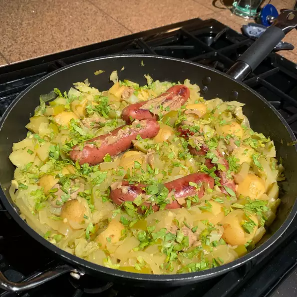

Chicken Apple Sausage with Cabbage

Description
This is a great cold weather meal, although it's delicious anytime of the year.
Ingredients
- 1½ teaspoon butter
- 1 teaspoon olive oil
- 4 links chicken and apple sausage
- 1 onion, sliced
- salt and freshly ground black pepper to taste
- 3 cloves garlic, crushed
- 3 cups apple cider or apple juice
- 1 pound small Yukon Gold potatoes, scrubbed but not peeled
- 1½pounds finely shredded green cabbage
- salt and freshly ground black pepper to taste
- 2 tablespoons Dijon mustard, for garnish
- 2 tablespoons chopped fresh parsley, for garnish
Steps
- Combine butter and olive oil in a Dutch oven over medium heat; add sausages and cook until browned on all sides, 6 to 8 minutes.
- tir onion, pinch of salt, and pinch of pepper in with the sausages. Cook and stir until onions are slightly translucent and caramelized, about 5 minutes.
- Stir garlic into sausage mixture; cook and stir for 30 seconds.
- Pour apple cider into sausage mixture; increase heat to medium-high and stir in potatoes. Bring to a simmer.
- Pour cabbage over top of sausage mixture and reduce heat to medium-low. Cover and simmer until potatoes are tender, 20 to 25 minutes. Remove sausages and potatoes from the Dutch oven and set aside.
- Increase heat to high, simmer liquid until thick and reduced by half, about 5 minutes.
- Return potatoes and sausages to the Dutch oven and remove from heat. Season with salt and pepper to taste. Garnish with mustard and parsley.